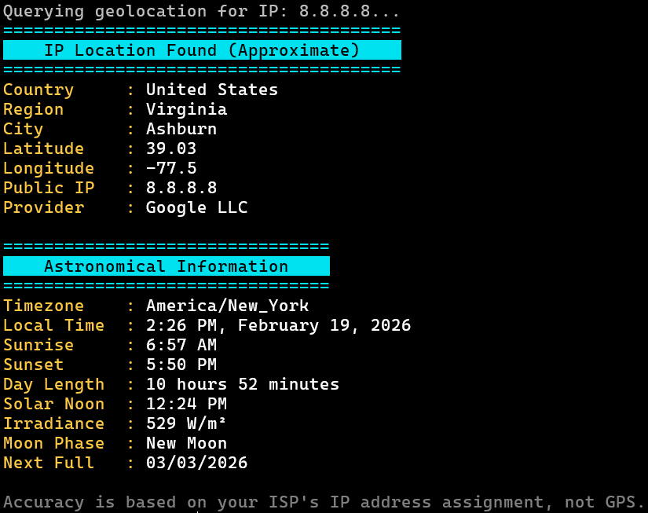

|  |
Here — IP Location & Astronomical InfoHere is a PowerShell script that retrieves your machine's approximate geographical location using a public IP geolocation API (ip-api.com). It optionally accepts an IP address as a command-line argument to query a specific IP. Location accuracy is based on the IP address, not GPS. The script also displays astronomical data for that location: sunrise, sunset, day length, solar noon, clear-sky irradiance (GHI in W/m²), moon phase, and next full/new moon dates. Key features include:
The script uses a simple console layout with cyan headers and yellow labels. It requires an active internet connection. Use Data source: ip-api.com (geolocation). UpdatesLoading updates... DownloadsPowerShell Edition: [ ps1 ] ↳ README |